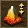
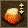
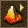

这个按钮可以开启高山海拔转变模式，如果你想改变某个地方的海拔高度，将你的鼠标移到那裡，按住鼠标左键可以使这片区域海拔升高，按住鼠标右键可以使海拔降低。按住鼠标左键或右键然后流畅地移动光标就可以创造一个峡穀或者山脉。在萤幕右上方的工具选项栏裡有一个滚动条，你可以用它来改变画笔的半径。
另外一个平原海拔转变模式是点击这个按钮。这个模式与刚才那个模式不同的是这个模式可以建立一块平坦的高地。
这个按钮可以开启平坦模式。将你的鼠标移到你想平坦的地区，然后点击鼠标左键，然后画笔所刷过的所有地区将会转变成与鼠标中心点同高的均匀平坦地带。在这个模式中，你可以点击鼠标右键添加随机不规则地形到地图上。按住鼠标右键你可以看到笔刷扫过的区域被一些小山坡所取代。
平滑模式通过这个按钮打开，可以让这个地区更自然。平滑模式可以让你去除地图上太过于陡峭的棱角。将鼠标移到一个你想让它平滑的地区然后点击鼠标左键，这个地区就会逐渐的变平滑。在这个模式下按住鼠标右键可以在山坡上创造峭壁。
这个按钮开启编辑线状地形模式。在你想改变的地区边缘点击鼠标左键，随著你的鼠标移动，一条黄色的线将从你点击鼠标的地方延伸。通过再次点击鼠标左键，你可以让黄线绕你希望的范围一个圈。通过将黄线围城一个封闭的圈或者点击鼠标右键来使选择区域过程结束，结束后，一个对话框将显示在桌面上：
Cublic——依照黄线创建斜坡，你可以在下方的框中指定高度；
Squad——依照黄线创建陡峭的山坡，你可以在下方的框中指定高度；
Smooth——依照黄线创建平坦的地区；
Road1、Road2、Road3——依照黄线创建三种不同的道路。

你也可以通过点击按个按钮来使用一个更加方便的模式来编辑地貌。一个显示地图地形海拔高度的小画板（黑色地带海拔为0，越亮的地方海拔越高）将显示在萤幕上。右边的滚动条能让你调节海拔高度。
突起的高度——定义山的高度
突起的半径——定义画笔的半径大小
交叉口的宽度——定义斜坡的长度
突山端的数量——定义突出部分的数量
突山端的深度——定义突出部分的深度
缺口的梯度——山的阶梯度
右下角的按钮被分为几个部分：
突山端的类型——定义斜坡的类型。你可以在提供的斜坡类型中做出选择。
 ——常规形状
——常规形状
 ——凹面形状
——凹面形状
 ——凸面形状
——凸面形状
 ——锥形
——锥形
 ——不规则形状
——不规则形状
压力类型——定义高地上层外贸
——陡峭的山顶
——光滑的
——倾斜光滑的
 ——平滑下降的
——平滑下降的
笔刷外形——定义高地的形状
 ——平滑的
——平滑的
 ——不规则的
——不规则的
高度
 ——测量画板上地形的海拔高度
——测量画板上地形的海拔高度
完成了设置后，左键点击画板上你想要修改的区域，你会看到画板上你的鼠标点击的地方改变了颜色。你的鼠标就像笔刷，你可以在地图上创造山脉或者各种各样的山。点击“生成”就可以在地图上完成你设置的地形。你可以使用编辑地形的按钮来优化你的地图，这样，这些山就会很快的被修改。如果你想取消你的修改，点击“取消”按钮就行了。